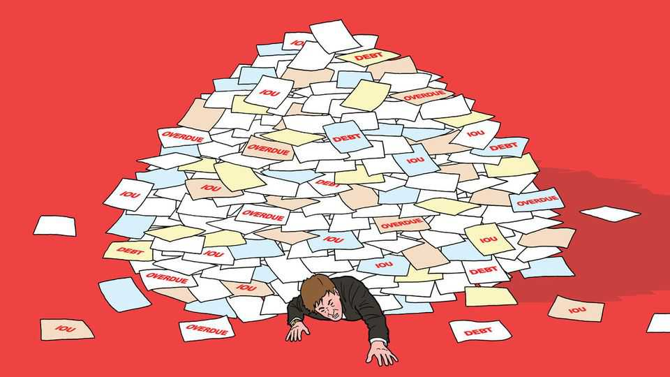
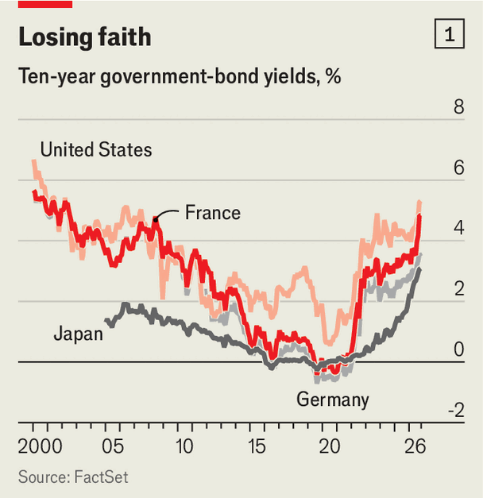
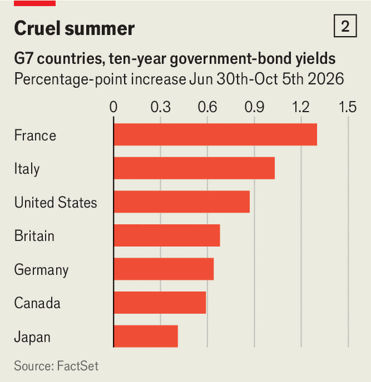
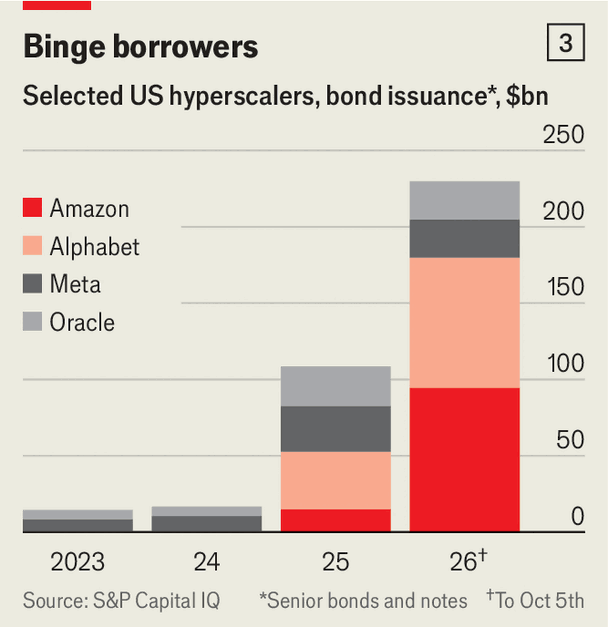
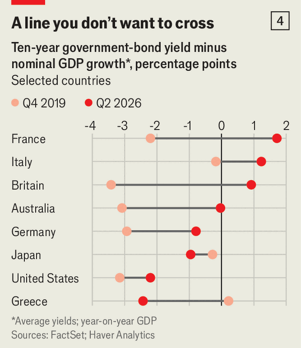

Turbulent bond markets threaten some countries more than others
For those where interest rates outstrip economic growth, trouble looms

Oct 8th 2026
FOREVER, IT TURNS out, was temporary. For much of the 2010s economists worried that interest rates would remain near zero indefinitely, held down by too much saving and too little investment. All of a sudden, the reverse is true. Borrowing costs are leaping across the rich world and governments are starting to sweat.

On October 5th the yield on America’s ten-year bonds topped 5.3%, its highest in more than 20 years. Even in Japan, long a byword for near-zero rates, the ten-year yield has climbed above 3% for the first time since 1996. The median ten-year government bond in the rich world now yields 4%, the highest in more than 15 years and over 2.5 percentage points above the average in 2015-19 (see chart 1). A new interest-rate regime is taking shape.
The sell-off in government bonds—yields rise when prices fall—has gathered pace in recent months. Since the end of June French ten-year yields have risen by about 1.3 percentage points and Italian ones by a percentage point (see chart 2). These higher borrowing costs are colliding with near-record levels of debt in the rich world. The more governments owe, the harder higher rates bite.
Yields are high almost everywhere, but often for different reasons, bringing different degrees of danger. High energy prices are pushing up inflation globally, forcing central banks to keep interest rates higher. In America strong growth and the boom in investment in AI are creating enormous demand for capital. And in some places, fiscal deterioration and populist politics are making investors warier of government debt. Politicians are flirting with disaster. The countries with weak growth and high debt are most at risk.

America’s economy has repeatedly proved stronger than investors had expected. When businesses, consumers and the state want to buy more than an economy can easily provide, central banks have to keep rates higher to curb their enthusiasm. But even with borrowing costs at their highest in decades, after adjusting for inflation, the economy is still roaring. A broad measure of private domestic demand grew at an annualised pace of 4.6% in the second quarter. The Atlanta Federal Reserve’s “nowcast” suggests annualised third-quarter GDP growth of 3.7%.
On September 23rd the flash estimate of S&P Global’s purchasing-managers’ index, a survey of activity across manufacturing and services, showed the fastest expansion since July 2021, far exceeding expectations. Treasuries sold off sharply and the ten-year yield jumped by 0.15 percentage points, its biggest daily rise of the year. Markets were digesting the likelihood that the Federal Reserve would have to keep rates higher for longer.
The resilience to higher rates derives in part from the AI frenzy, which has powered a stock-market rally. Economists at the Minneapolis Federal Reserve, using a rule of thumb that each additional dollar of equity wealth raises spending by three cents, estimate that the AI boom is adding 0.5-1% of GDP to consumption each year. A similar effect is visible in Japan, where the Bank of Japan says AI-driven gains in asset prices may have boosted demand.
AI is also generating enormous new demand for capital. In America business investment, usually especially sensitive to interest rates, expanded at an annualised pace of 9% in the second quarter, with the AI buildout a big driver. The five biggest “hyperscalers”—Alphabet, Amazon, Meta, Microsoft and Oracle—spent about $330bn on capital investment in the first half of the year. Goldman Sachs, a bank, expects their spending to reach around $800bn this year and $1.2trn in 2027, more than 3% of America’s GDP.
The construction spree is spreading beyond America. Data centres accounted for more than a fifth of greenfield investments announced worldwide last year. PwC, a consultancy, expects some $5trn to be spent on data centres by the end of 2030. All that spending requires an enormous amount of borrowing.

The first stages of the AI boom were largely financed from the tech giants’ enormous cashflows. Now they are turning to debt. Hyperscalers have issued $230bn of bonds so far this year, double the total for last year (see chart 3). Across the broader AI industry, Goldman Sachs estimates that almost $500bn of debt had been issued by early August.
As AI investment absorbs more of the world’s savings, borrowing costs rise. Jessica Wachter of the University of Pennsylvania and Jonathan Wachter of Point72, an investment firm, estimate that the AI boom alone could lift real interest rates by about half a percentage point in America. And AI is not the only industry clamouring for capital. American electric utilities plan some $1.4trn of investment over the next five years, for instance.
In America, then, there is no shortage of investment opportunities. The bond market reflects that shift. Yields on ten-year inflation-protected Treasury bonds have climbed by about a percentage point over the past six months, even as long-term expectations of inflation barely budged. Investors are betting that borrowing costs will remain high even after inflation cools.
Higher Treasury yields reverberate through bond markets around the world. When Treasuries pay more, other bonds become less attractive unless they offer higher yields, too. That tends to pull borrowing costs higher elsewhere.
AI-related borrowing is also putting direct pressure on bond markets outside America. The five hyperscalers now account for nearly 10% of new euro-denominated bonds sold by non-financial companies. Some European firms have reportedly avoided issuing debt on the same days as them for fear of having to pay more. In Japan, too, the AI investment rush is feeding a surge in corporate borrowing. Bond issuance has hit a record, helped by SoftBank, a Japanese investment giant, which is borrowing heavily to finance its AI ambitions.
The energy shock sparked by the war in Iran is adding to the AI boom’s impact on bond markets. Months of disruption in the Strait of Hormuz have kept energy prices painfully high. Crude oil is roughly 40% dearer than before the war. Gas and fertiliser are also more expensive. Energy-importing countries in Europe and Asia are suffering most. Before America and Israel began bombing, the IMF expected global inflation to fall from 4.1% last year to 3.8% this year. It has since revised this year’s forecast to 4.7%.
Central bankers can normally ignore a one-off energy shock as a passing ripple. But this one has lasted for most of the year and comes after five years of elevated inflation, raising the risk that higher energy costs feed into other prices and cause consumers’ sense of the normal rate of inflation to rise. In Britain households’ long-term inflation expectations edged up to 4.3% in September. In Japan a measure of inflation that strips out unusually large price moves rose from 1.7% in February to 2.2% in August, suggesting that it is not just energy prices that are rising.
Central banks have responded with higher rates. In September the Federal Reserve raised them for the first time since 2023. Kevin Warsh, the Fed’s chair, cited “geopolitical developments”. The European Central Bank has raised rates twice in recent months and the Bank of Japan has lifted its main rate to a 31-year high.
That marks a dramatic shift. Before the war markets expected three cuts from the Fed by March 2027, taking its target range to 2.75-3%. They now expect rates to reach 4.25-4.5% by then—a swing of 1.5 percentage points in barely seven months. Europe has seen a similar U-turn. Investors had expected the ECB to hold rates steady. But even after its two recent increases, they now foresee at least two more by mid-2027.
Short-term bond yields, which closely track expectations for central-bank rates, have moved sharply higher as a result. Across the rich world, two-year yields are up by over a percentage point on average from the start of the year. Longer-term yields have followed, though less swiftly.
The most troubling force pushing up yields is political and fiscal risk. America is getting off lightly despite its budget deficit of around 6% of GDP and President Donald Trump’s repeated attacks on the Fed. The central bank underscored its independence in September, when Mr Warsh raised rates in the face of the president’s objections. Estimates of the term premium—the additional return investors demand to hold long-dated bonds—have barely moved this year.
Elsewhere, markets are proving less forgiving. France is the clearest example. Public debt is near 120% of GDP and the budget deficit is expected to reach 5.4% this year, its fourth year in a row above 5%. Political dysfunction has weakened confidence that the government can bring its runaway finances under control. Investors recently demanded a premium of more than 1.5 percentage points to hold ten-year French bonds rather than German ones, the widest spread since 2011. France now pays more to borrow for ten years than Italy and even Greece—an extraordinary reversal for a country long considered one of Europe’s more creditworthy borrowers.
The government is trying to restore confidence. On October 1st Sébastien Lecornu, the centrist prime minister, unveiled a budget for 2027 with €43bn ($48bn) of new tax rises and spending cuts, including a contentious freeze on the most generous state pensions. The goal is to reduce the deficit to 5% of GDP next year. But Mr Lecornu does not command a parliamentary majority and lawmakers are expected to rewrite his plan.
Next year’s presidential election is adding to markets’ unease. Polls put Marine Le Pen, on the populist right, well ahead. Ms Le Pen promises to repair the public finances with a “golden rule” requiring the deficit to fall by at least half a percentage point of GDP each year. On October 6th she put numbers on the promise, unveiling a plan for €140bn of savings by 2032.
Ms Le Pen’s newfound fiscal discipline clashes with other promises, such as scrapping a rise in the retirement age for some workers. Many of her planned cuts are woolly or optimistic. “Unfortunately, now that she has shown where she intends to find the money, there is zero credibility to her promise,” says Olivier Blanchard, a former chief economist at the IMF. Markets were somewhat more receptive: France’s ten-year yield fell a little.
Jean-Luc Mélenchon, on the populist left, is Ms Le Pen’s nearest rival in the polls. His suggestion for solving the debt problem is to “burn” the portion held by the Bank of France. Bondholders are likely to have a jittery few months.
The unease is spreading across the Alps. Italy’s ten-year yield has risen by about a percentage point since the end of June, to around 4.7%, reflecting the broader rise in European rates as well as concern about a country with net debt of almost 130% of GDP. Giorgia Meloni’s government expects to bring the deficit below 3% of GDP this year, but it is forecast to rise again to 3.4% next year as Italy spends more on defence and to cushion the energy shock. An election is due next year, and the rise of Futuro Nazionale, a new far-right party, is adding to the political uncertainty.
Fiscal concerns are also pushing up yields in Japan. Takaichi Sanae, the prime minister, is putting government money into a big investment push including semiconductors and AI while cutting the consumption tax on food. Her government has scrapped a pledge to run a budget surplus before interest payments, despite Japan’s net debt of 134% of GDP. The yield on 30-year government bonds has climbed above 4.2%, a record high.
Higher global yields will take a growing toll on government budgets. Much of the rich world’s outstanding debt still carries the low interest rates of the cheap-money era. That softens the immediate blow from higher yields, which hit budgets only gradually as governments refinance old debt and issue new. But a reckoning is coming. A third of the fixed-rate government debt across the OECD, a club mostly of rich countries, matures from 2026 to 2028. Interest payments, which already consume 3.3% of the bloc’s GDP, are set to climb.
In America the costs could be huge. Net interest payments already exceed $1trn a year, more than the federal government spends on defence. If borrowing costs remain around today’s levels, annual federal interest payments will nearly triple to $2.8trn within a decade, according to the Committee for a Responsible Federal Budget, a non-partisan think-tank. That would be more than America spends on pensions or health care for the elderly.
A country can live with high debt if its economy is growing quickly, because the debt will then shrink relative to national income (and potential tax revenue). But when interest rates are higher than economic growth, debt will rise relative to GDP unless governments respond with higher taxes or lower spending.
America is better placed than many other rich economies because growth remains strong. Heavy investment in AI could provide a further boost if it eventually lifts productivity. France and Italy face a less forgiving combination of weak growth and high borrowing costs.

In France borrowing costs were around two percentage points above nominal GDP growth in the second quarter, the widest gap in the rich world. The gap has since widened further. Italy faces a similarly unfavourable gap and carries even more debt (see chart 4). But their fiscal starting points are very different. Italy already runs a primary surplus—which excludes interest payments—whereas France runs a primary deficit of 2.9% of GDP.
As France’s stock of cheap debt is gradually refinanced, the strain will grow. To grasp the scale of the challenge, imagine all its borrowing were refinanced today. At the current five-year yield, The Economist calculates the government would need a primary surplus of about 1.8% of GDP just to stop the debt growing faster than the economy. France has not run a primary surplus of that size since the early 2000s.
There will have to be a formidable fiscal adjustment or there will be a crisis. But the euro zone is more prepared for upheaval than it used to be. Banks are better equipped to withstand a sovereign-debt shock than they were during the euro crisis of the early 2010s. The ECB also has the power to intervene more forcefully in bond markets now, making a self-fulfilling panic harder to sustain. “France is not an emerging market in which suddenly nobody wants to lend and you have to find the money somewhere,” says Mr Blanchard. But with government revenues already exceeding half of GDP, there is limited room to raise taxes much further. The likeliest outcome is a prolonged fiscal squeeze, as weak growth and high borrowing costs force repeated rounds of spending cuts.
Across the rich world, higher borrowing costs risk becoming self-reinforcing. Goldman Sachs estimates that, if current rates persist, they will knock just over half a percentage point off growth in America in 2027. Slower growth, in turn, makes big debts harder to stabilise. If investors lose faith in governments’ ability to get their finances under control, they may demand a larger premium to hold long-term bonds, pushing borrowing costs higher still.
Higher rates may also cause havoc for private borrowers. Defaults on private credit have risen sharply. In Britain in 2022 soaring gilt yields caught out lots of pension funds with investments in derivatives, forcing them to sell bonds and so driving yields higher still, until the Bank of England intervened. Soon after in America losses on long-dated bonds felled Silicon Valley Bank and set off a panic about the health of other regional banks.
How much damage higher yields cause will depend on how long they last. Some of the recent rise could unwind if inflationary pressures subside. But a return to the cheap-money world of the 2010s looks unlikely. If yields stay elevated, higher taxes or spending cuts will eventually be unavoidable. Cheap money bought governments time. Higher yields are now hastening a reckoning. ■